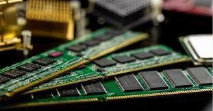

📌 O que é a RAM?
A RAM (Memória de Acesso Aleatório) é como a mesa de trabalho do computador. É nela que os dados dos programas abertos ficam temporariamente armazenados para acesso rápido. Quando você abre o navegador, um jogo ou até o bloco de notas, o sistema joga isso para a RAM para que tudo funcione com agilidade.
⚙️ Diferença entre RAM e armazenamento (HD/SSD)
Enquanto o HD ou SSD são como “armários” que guardam tudo permanentemente, a RAM só guarda informações enquanto o computador está ligado. Desligou? Tudo some. Isso é essencial para que o sistema funcione de forma rápida e leve.
🚀 Por que mais RAM deixa o PC mais rápido?
Com mais RAM, o sistema pode manter mais programas abertos ao mesmo tempo sem precisar usar a memória virtual (parte do HD usada como RAM). Isso evita lentidão, travamentos e aumenta a vida útil do seu SSD.
💡 Curiosidades que você provavelmente não sabia:
- Alguns vírus avançados se escondem na RAM para evitar detecção.
- Hackers usam técnicas chamadas "fileless malware" que atuam apenas na RAM.
- Você pode aumentar a RAM de um desktop facilmente, mas em muitos notebooks ela é soldada e não pode ser expandida.
🖼️ Exemplo visual
Aqui está uma imagem simples para ilustrar a diferença:
